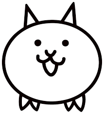

這段時間以來謝謝妳的陪伴，雖然今年不能用很好的禮物來犒勞妳。
也還和妳有很多次的爭執，總是有很多意見不合的時候。
是這些不斷不斷一起走來的路才讓我知道，原來我所想要的是什麼。
我在這一路走來的風景裡不斷地思考著，思考著我所想得到的未來。
所看見的都是希望未來能有妳的陪伴，希望未來能是你和我一起走下去。
愛你的溫柔，也愛妳的脾氣，就是因為這樣的一路走來，我看見了妳的脆弱和溫柔。
妳總是對我的懦弱發怒，總想為我站出來發聲，總想讓我體會到妳體會到的美好。
的確是妳讓我看到了不同的世界，而我也了解妳所說所作以往的那些事情。
行為我都有看到，也是妳所做的這些讓我意識到我所不足的點。
為了這段感情，也為了我自己，我會繼續成長。
之後的未來我會和妳一起站在前面去看妳想看的世界，做我發自內心想過的生活。
一起笑一起嘴賤，彼此一起過著有著很多情緒的生活。